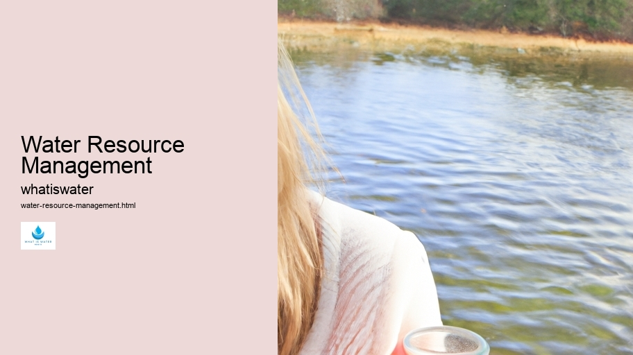

Hydrological Cycle
Hydrological Cycle
Evaporation and transpiration
Condensation and cloud formation
Precipitation and rain patterns
Surface runoff and river systems
Groundwater flow and aquifers
Snowmelt and glacial processes
Water storage in oceans lakes and reservoirs
Soil moisture and infiltration
Water balance and budgeting
Human impact on the hydrological cycle
Marine Ecosystems
Marine Ecosystems
Coral reefs and their biodiversity
Mangrove forests as coastal protectors
Ocean currents and climate regulation
Deepsea habitats and extremophiles
Intertidal zones and estuarine ecosystems
Marine food webs and trophic levels
Freshwater Ecosystems
Freshwater Ecosystems
Conservation efforts for marine species
Marine biogeochemical cycles
Impact of global warming on oceans
Water Resource Management
Water Resource Management
Rivers streams and creeks ecosystems
Lakes ponds wetlands habitats
Biodiversity in freshwater environments
Aquatic plants role in oxygenation
Freshwater fish species diversity
Invasive species impact on freshwater systems
Pollution threats to freshwater sources
Conservation strategies for freshwater biomes
Role of wetlands in flood control
Importance of riparian buffers
Cultural Significance of Water
Cultural Significance of Water
Sustainable water use practices
Desalination technologies for fresh water supply
Wastewater treatment processes
Rainwater harvesting techniques
Management of water during drought conditions
Transboundary water resource politics
Infrastructure for water distribution
Agricultural irrigation efficiency
Urban water demand management
Impact of climate change on water resources
About Us
Contact Us

Water Resource Management
Floods
Water resource management is a multifaceted discipline that encompasses the planning, development, distribution, and stewardship of water resources.
Rivers streams and creeks ecosystems
.
Rain Gardens
It is essential for ensuring the sustainable use of one of Earth's most vital natural assets. Water resource management aims to balance the needs of society with those of the environment, striking a harmony between economic growth and ecological preservation.
At its core, water resource management involves understanding the hydrological cycle—the continuous movement of water on, above, and below the surface of the Earth. This comprehension allows for effective forecasting and allocation of water supplies to meet various demands such as domestic use, agriculture, industry, recreation, and environmental conservation.
Integral to proper water resource management is addressing both quality and quantity concerns.
Aquifers
Floods
Contaminants from industrial discharges, agricultural runoff, and urban waste can severely degrade water quality. Therefore, rigorous standards and treatment processes are implemented to safeguard drinking water supplies as well as aquatic ecosystems.
Adaptive strategies are crucial due to changing climatic conditions which can lead to extreme weather events like floods or droughts. Water managers must employ innovative approaches such as rainwater harvesting or desalination to augment sources during scarcity while also enhancing infrastructure resilience against flooding.
Stakeholder participation represents another key element in successful water resource management. Involving local communities in decision-making processes helps ensure that solutions are equitable and considerate of diverse interests—ranging from indigenous rights to commercial necessities.
In conclusion, effective water resource management requires a holistic approach that integrates scientific knowledge with societal values. By embracing innovation and collaboration across multiple sectors—and recognizing our shared responsibility—we can secure clean and abundant water for future generations while honoring our environmental obligations.
Wastewater Treatment
Hydrological Cycle
Check our other pages :
Water balance and budgeting
Lakes ponds wetlands habitats
Precipitation and rain patterns
Intertidal zones and estuarine ecosystems
Frequently Asked Questions
What is water resource management and why is it important?
Water resource management is the process by which we plan, develop, distribute, and manage the optimum use of water resources. It is critical because it ensures sustainable access to adequate quantities of and quality water for various human uses while protecting the environment. Effective management helps to prevent conflicts over water use, protects ecosystems, conserves water for future generations, and can also mitigate the effects of droughts and floods.
How do climate change and population growth affect water resources?
Climate change affects patterns of precipitation, river flows, and sea levels, leading to more extreme weather events such as floods and droughts that impact the availability of freshwater. Population growth intensifies demand for water for domestic use, agriculture, industry, and energy production. Both factors increase pressure on existing water resources which can lead to scarcity or conflict over usage rights.
What role does technology play in modern water resource management?
Technology plays a crucial role in modern water resource management by providing tools for monitoring and managing aquatic environments efficiently. Innovations such as remote sensing for tracking reservoir levels, smart irrigation systems optimizing agricultural usage, advanced treatment plants enabling wastewater reuse, AI forecasting models predicting supply-demand trends or potential crises all contribute to smarter decision-making regarding our precious freshwater resources.